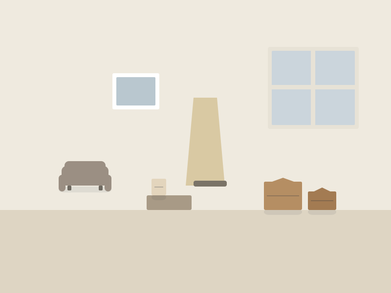

1
Échange
Ce que vous souhaitez garder, les dates imposées, la présence d'objets sensibles.
Vider le logement d'un proche fait partie des démarches les plus lourdes.

Vider le logement d'un proche fait partie des démarches les plus lourdes. Nous intervenons de manière discrète, sans véhicule siglé quand c'est utile, et nous adaptons le rythme : parfois il faut tout faire en une fois, parfois procéder par étapes.
Ce que vous souhaitez garder, les dates imposées, la présence d'objets sensibles.
Clair, transmissible au notaire si nécessaire.
Silencieuse et organisée, avec mise de côté systématique.
Logement vide, prêt à être vendu, loué ou restitué.
Voir la page Tarifs et les facteurs détaillés ›
Oui, les situations avec délai de restitution sont traitées en priorité selon nos disponibilités. Indiquez la date limite dans votre demande.
Non. Beaucoup de familles gèrent l'intervention à distance après un premier échange et une visite de repérage. Nous documentons alors chaque étape.
Ils sont identifiés, photographiés et mis de côté pour vous. Aucun objet de valeur n'est évacué sans votre validation.
Décrivez votre situation en quelques étapes et ajoutez des photos. Réponse sous 24 h ouvrées.
Demander un devis gratuit Appeler le 04 13 24 56 78 WhatsAppVider une maison entière, pièce par pièce, sans rien porter.
Vider un appartement en étage, proprement et sans gêne pour les voisins.
Récupérer votre cave, souvent encombrée depuis des années.